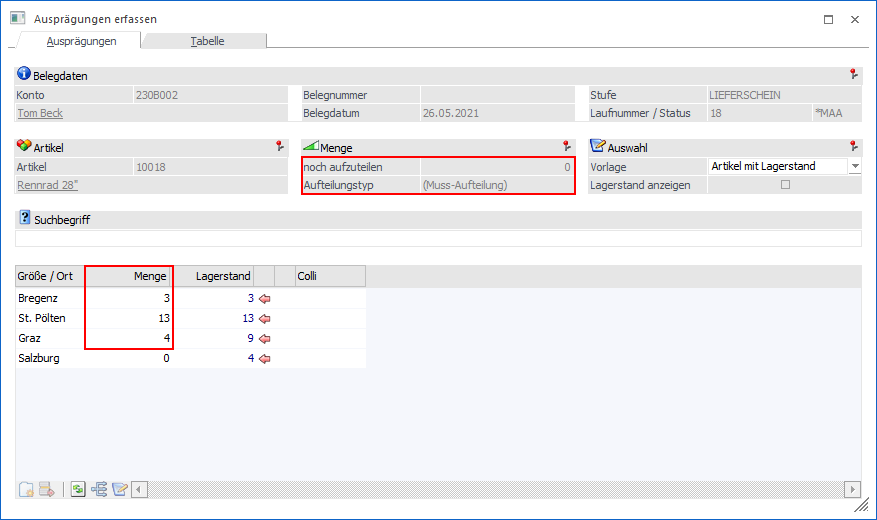
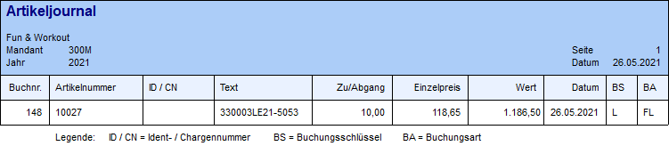
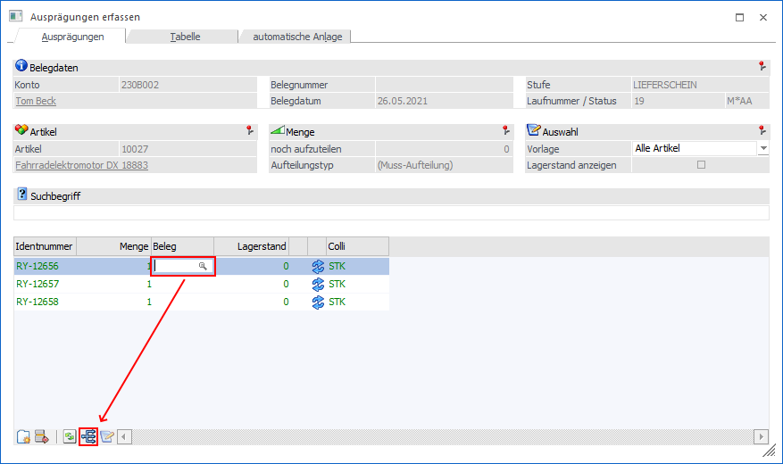
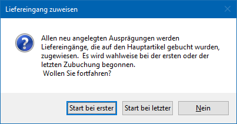
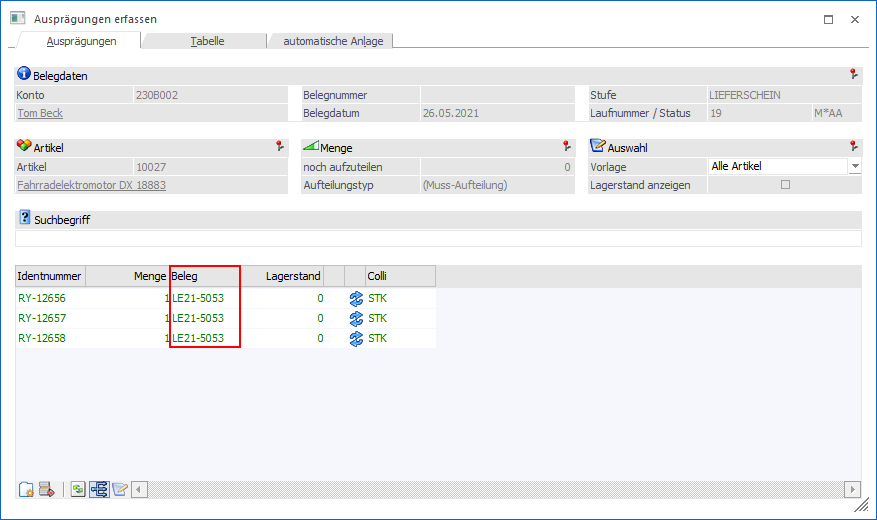
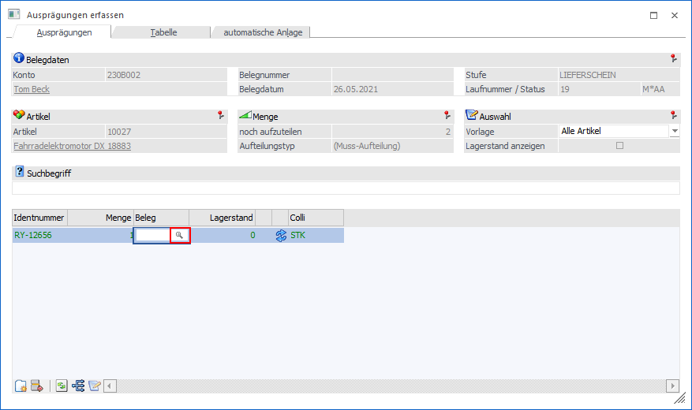
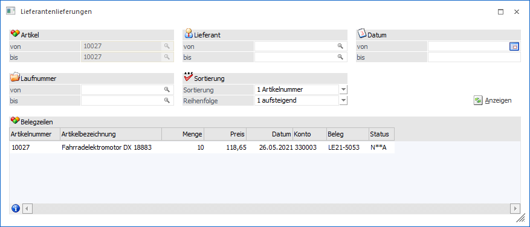
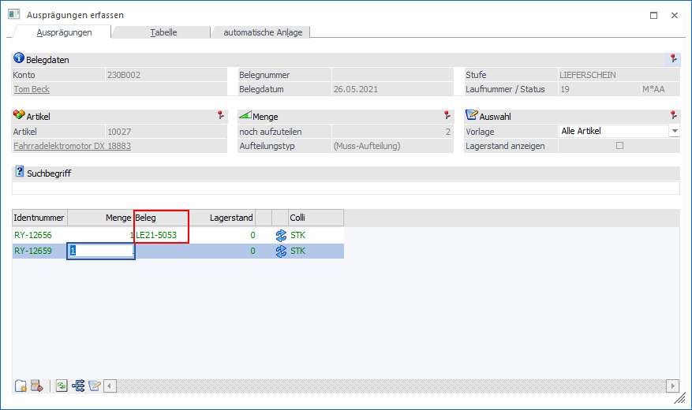
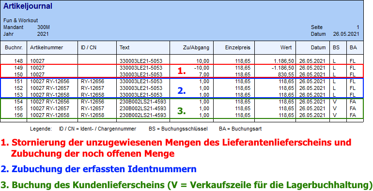

In diesem Kapitel werden die Sonderfunktionen des Fensters Ausprägungen erfassen (geöffnet aus der Belegerfassung) beschrieben.
Hinweis für Zeilenformeln
Grundsätzlich stehen für das Arbeiten mit Zeilenformeln im "Ausprägungen erfassen" (z.B. für Vorbelegungen) alle Felder zur Verfügung. Bis einschließlich Version 10.3 (10003) bestand die Einschränkung, dass nur jene Felder per Formel beschrieben werden konnten, welche sichtbar waren, z.B.:
ü Menge2 (Variable 0,655)
ü Ausprägung1 (Variable 0,210)
ü Ausprägung2 (Variable 0,211)
Tabellenbuttons
Ø Menge automatisch füllen (nur in Belegerfassung und WinLine PPS)
Mittels dieses Buttons ist es möglich, eine aufzuteilende Menge automatisch in der Tabelle aufzuteilen. D.h. es wird pro Zeile kontrolliert, ob ein Lagerstand verfügbar ist. Ist dies der Fall, so wird die Menge automatisch belegt.
Beispiel
Es wird ein Kundenauftrag über 20 Stück eines Hauptartikels mit Ausprägungen erfasst (ohne dabei auf die einzelnen Ausprägungen auszuprägen). Zum Zeitpunkt der Erstellung des Lieferscheins sind folgende Lagerstände vorhanden:
ü 1. Ausprägung = 3 Stück am Lager
ü 2. Ausprägung = 13 Stück am Lager
ü 3. Ausprägung = 9 Stück am Lager
ü 4. Ausprägung = 4 Stück am Lager
Im Lieferschein wird nun ins Aufteilungsfenster gewechselt, und der Button "Menge automatisch füllen" gedrückt. Dabei werden folgende Mengen den einzelnen Ausprägungen zugewiesen:
ü 1. Ausprägung = 3 Stück
ü 2. Ausprägung = 13 Stück
ü 3. Ausprägung = 4 Stück

Achtung 1
Bei Einkaufsbelegen wird immer die erste mögliche Zeile mit der gesamten Aufteilungsmenge belegt.
Achtung 2
Bei Ausprägungsartikeln mit Reservierungszeilen (Artikelreservierung ist aktiv) werden die Lagerreservierungszeilen für die Ausprägung berechnet und vom Lagerstand abgezogen. Wenn bei einer Ausprägung beispielsweise zehn Stück auf Lager sind, sieben davon aber für einen anderen Auftrag reserviert sind (Kunden- bzw. Produktionsauftrag), wird bei der automatischen Aufteilung durch diesen Button nur noch eine Aufteilungsmenge von drei Stück vorgeschlagen.
Ø Liefereingänge zuweisen (nur in Belegerfassung)
Bei Eingangsbelegen (Lieferantenlieferschein und -faktura) besteht die Möglichkeit die Liefermenge nur auf den Hauptartikel zu buchen. Im Zuge des Verkaufes kann mit Hilfe des Buttons "Liefereingänge zuweisen" auf diese Zubuchungen verwiesen werden sobald neue Ausprägungen angelegt werden.
Beispiel
Es wird ein Lieferantenlieferschein über 10 Stück des Identnummernartikels "10027" (Fahrradelektromotor DX 18883) erfasst, wobei die gesamte Stückzahl auf den Hauptartikel gebucht wird. Im Artikeljournal ist jetzt ersichtlich, dass "nur" eine Zubuchung auf den Hauptartikel erfolgt ist

In dem folgenden Verkaufsbeleg (hier "4 - Faktura") werden die zu verkaufenden Elektromotoren mit einer Identnummer versehen und der Lieferantenlieferung zugewiesen. Diese Zuweisung kann automatisch oder manuell vorgenommen werden.
ü Automatische Zuweisung
Es
werden die einzelnen Identnummern im Fenster "Ausprägungen erfassen" angelegt.
Danach wird der Fokus auf die Spalte "Belege" gelegt (diese muss ggfs. über das
Kontextmenü der rechten Maustaste und dort "Spalten anzeigen / verstecken"
eingefügt werden) und der Button "Liefereingänge zuweisen" gedrückt.


ü Start bei erster
Durch diese
Auswahl wird bei der ältesten Zubuchung (ältester Lieferantenlieferschein)
begonnen und den Chargen- / Identnummern entsprechend zugewiesen.
ü Start bei letzter
Durch diese
Auswahl wird bei der jüngsten Zubuchung (neueste Lieferantenlieferschein)
begonnen und den Chargen- / Identnummern entsprechend zugewiesen.
ü Nein
Durch diese Auswahl wird
keine Zuweisung vorgenommen.
Da es in diesem Beispiel nur
einen Lieferantenlieferschein gibt sieht die Zuweisung im Fenster "Ausprägung
erfassen" (egal ob "Start bei erster" oder "Start bei letzter") wie folgt
aus:

ü Manuelle Zuweisung
Es wird die
erste Identnummer im Fenster "Ausprägungen erfassen" erfasst. Danach wird der
Fokus auf die Spalte "Belege" gelegt (diese muss ggfs. über das Kontextmenü der
rechten Maustaste und dort "Spalten anzeigen / verstecken" eingefügt werden) und
das Lupen-Symbol bzw. die Taste F9 gedrückt.



Nach dem Druck des Verkaufsbeleges (egal ob die Zuweisung automatisch oder manuell vorgenommen wurde), werden folgende Daten für den Lieferantenlieferschein korrigiert bzw. aktualisiert:
ü Im Einkaufsbeleg wird die Zeile mit dem nicht aufgeteilten Hauptartikel um die aufgeteilte Menge reduziert. Des Weiteren werden Zeilen mit dem aufgeteilten Hauptartikel und den Ausprägungen eingefügt.
ü Im Artikeljournal wird die Zeile mit dem nicht aufgeteilten Hauptartikel um die aufgeteilte Menge reduziert. Zusätzlich erfolgt die Zubuchung der Ausprägungen.
ü Der Artikelstamm und die Artikelperiodenwerte werden um die Ausprägungen aktualisiert.
ü Wenn der Lieferantenlieferschein bereits als Faktura gedruckt wurde, dann wird auch die Statistik aktualisiert.
